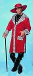

| HI |
|
Your mnemonic is right here:

Pimp's gotta use a cane because HE has got a skin condition. Some kind of alligator-hide allergy, I heard. Bad news. |
| かわ |
skin, (human or animal - also skin of an apple, or even the crust of bread!) (BOOBOO: don't use this for fur-covered skin, which is 毛皮）
★★★★☆ |
| 毛皮 |
animal fur
★★★★☆
KUNKUN
animal fur - on a living animal OR on a fur coat |
| 皮肉 |
sarcasm/irony
★★★☆☆
SARC
sarcasm OR irony. Japanese DO have a sense of sarcasm,(for example, calling the traditional chicken-and-scrambled-eggs dish "parents and child") but it is so different than the Western say-the-opposite-of-what-you-mean style that Japanese don't have a word for western sarc. So they seem to have taken their word for Irony and pressed it into service for sarcasm as well. |
| Meaning | Hint | Radical | |
|---|---|---|---|
| 支 | support | TEN | 十 |
| 皮 | skin | PIMP CANE |
Pimp supports TEN hoes, but walks with a CANE to save his skin.
|
skin
皮 肌 皮膚 革 |
 KANJIDAMAGE
KANJIDAMAGE